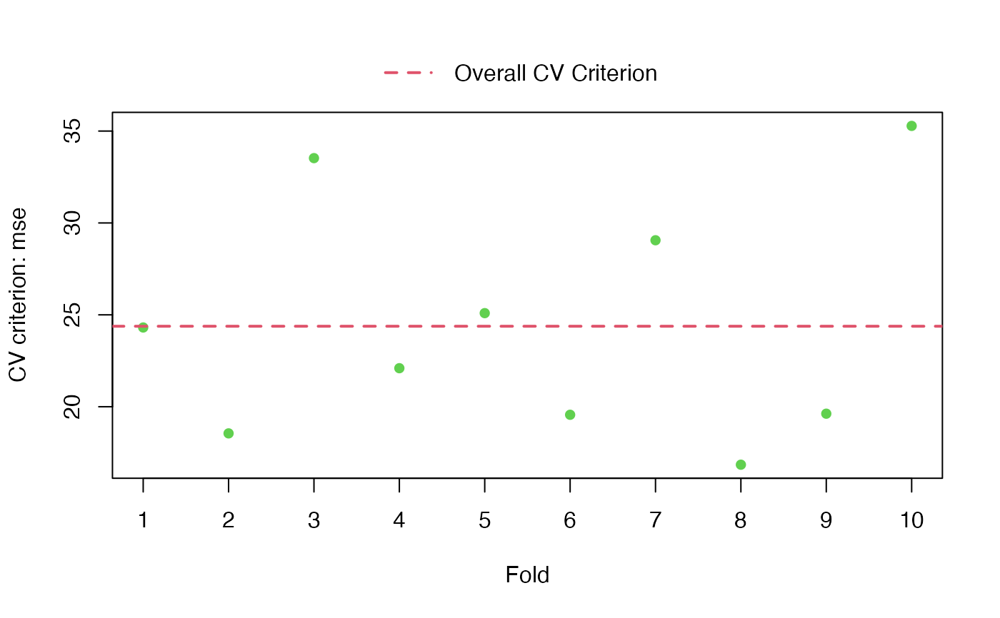
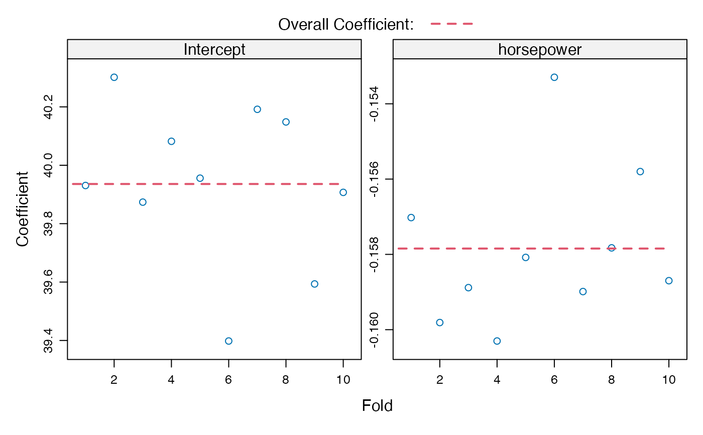

cv() is a parallelized generic k-fold (including n-fold, i.e., leave-one-out)
cross-validation function, with a default method,
specific methods for linear and generalized-linear models that can be much
more computationally efficient, and a method for robust linear models.
There are also cv() methods for mixed-effects models,
for model-selection procedures,
and for several models fit to the same data,
which are documented separately.
Usage
cv(model, data, criterion, k, reps = 1L, seed, ...)
# Default S3 method
cv(
model,
data = insight::get_data(model),
criterion = mse,
k = 10L,
reps = 1L,
seed = NULL,
criterion.name = deparse(substitute(criterion)),
details = k <= 10L,
confint = n >= 400L,
level = 0.95,
ncores = 1L,
type = "response",
start = FALSE,
model.function,
...
)
# S3 method for class 'lm'
cv(
model,
data = insight::get_data(model),
criterion = mse,
k = 10L,
reps = 1L,
seed = NULL,
details = k <= 10L,
confint = n >= 400L,
level = 0.95,
method = c("auto", "hatvalues", "Woodbury", "naive"),
ncores = 1L,
...
)
# S3 method for class 'glm'
cv(
model,
data = insight::get_data(model),
criterion = mse,
k = 10L,
reps = 1L,
seed = NULL,
details = k <= 10L,
confint = n >= 400L,
level = 0.95,
method = c("exact", "hatvalues", "Woodbury"),
ncores = 1L,
start = FALSE,
...
)
# S3 method for class 'rlm'
cv(model, data, criterion, k, reps = 1L, seed, ...)
# S3 method for class 'cv'
print(x, digits = getOption("digits"), ...)
# S3 method for class 'cv'
summary(object, digits = getOption("digits"), ...)
# S3 method for class 'cvList'
print(x, ...)
# S3 method for class 'cvList'
summary(object, ...)
# S3 method for class 'cv'
plot(x, y, what = c("CV criterion", "coefficients"), ...)
# S3 method for class 'cvList'
plot(
x,
y,
what = c("adjusted CV criterion", "CV criterion"),
confint = TRUE,
...
)
cvInfo(object, what, ...)
# S3 method for class 'cv'
cvInfo(
object,
what = c("CV criterion", "adjusted CV criterion", "full CV criterion", "confint", "SE",
"k", "seed", "method", "criterion name"),
...
)
# S3 method for class 'cvModList'
cvInfo(
object,
what = c("CV criterion", "adjusted CV criterion", "full CV criterion", "confint", "SE",
"k", "seed", "method", "criterion name"),
...
)
# S3 method for class 'cvList'
cvInfo(
object,
what = c("CV criterion", "adjusted CV criterion", "full CV criterion", "confint", "SE",
"k", "seed", "method", "criterion name"),
...
)
# S3 method for class 'cv'
as.data.frame(
x,
row.names = NULL,
optional = TRUE,
rows = c("cv", "folds"),
columns = c("criteria", "coefficients"),
...
)
# S3 method for class 'cvList'
as.data.frame(x, row.names = NULL, optional = TRUE, ...)
# S3 method for class 'cvDataFrame'
print(x, digits = getOption("digits") - 2L, ...)
# S3 method for class 'cvDataFrame'
summary(
object,
formula,
subset = NULL,
fun = mean,
include = c("cv", "folds", "all"),
...
)Arguments
- model
a regression model object (see Details).
- data
data frame to which the model was fit (not usually necessary).
- criterion
cross-validation criterion ("cost" or lack-of-fit) function of form
f(y, yhat)whereyis the observed values of the response andyhatthe predicted values; the default ismse(the mean-squared error).- k
perform k-fold cross-validation (default is
10);kmay be a number or"loo"or"n"for n-fold (leave-one-out) cross-validation.- reps
number of times to replicate k-fold CV (default is
1).- seed
for R's random number generator; optional, if not supplied a random seed will be selected and saved; not needed for n-fold cross-validation.
- ...
to match generic; passed to
predict()for the defaultcv()method; passed to theTapply()function in the car package forsummary.cvDataFrame(); passed to defaultplot()method forplot.cvList()orplot.cv().- criterion.name
a character string giving the name of the CV criterion function in the returned
"cv"object (not usually needed).- details
if
TRUE(the default if the number of foldsk <= 10), save detailed information about the value of the CV criterion for the cases in each fold and the regression coefficients with that fold deleted.- confint
if
TRUE(the default if the number of cases is 400 or greater), compute a confidence interval for the bias-corrected CV criterion, if the criterion is the average of casewise components; forplot.cvList(), whether to plot confidence intervals around the biased-adjusted CV criterion, defaulting toTRUEand applicable only if confidence intervals are included in the"cv"object.- level
confidence level (default
0.95).- ncores
number of cores to use for parallel computations (default is
1, i.e., computations aren't done in parallel).- type
for the default method, value to be passed to the
typeargument ofpredict(); the default istype="response", which is appropriate, e.g., for a"glm"model and may be recognized or ignored bypredict()methods for other model classes.- start
if
TRUE(the default isFALSE), thestartargument toupdate()is set to the vector of regression coefficients for the model fit to the full data, possibly making the CV updates faster, e.g., for a GLM.- model.function
a regression function, typically for a new
cv()method that that callscv.default()viaNextMethod(), residing in a package that's not a declared dependency of the cv package, e.g.,nnet::multinom. It's usually not necessary to specifymodel.functionto makecv.default()work.- method
computational method to apply to a linear (i.e.,
"lm") model or to a generalized linear (i.e.,"glm") model. See Details for an explanation of the available options.- x
a
"cv","cvList", or"cvDataFrame"object to be plotted or summarized.- digits
significant digits for printing, default taken from the
"digits"option.- object
an object to summarize or a
"cv","cvModlist", or"cvList"object from which to extract information viacvInfo().- y
to match the
plot()generic function, ignored.- what
for
plot()methods, what to plot: for the"cv"method, either"CV criterion"(the default), or"coefficients"; for the"cvList"method, either"adjusted CV criterion"(the default if present in the"cv"object) or"CV object".For
cvInfo(), the information to extract from a"cv","cvModList", or"cvList"object, one of:"CV criterion","adjusted CV criterion","full CV criterion"(the CV criterion applied to the model fit to the full data set),"SE"(the standard error of the adjusted CV criterion),"confint"(confidence interval for the adjusted CV criterion),"k", (the number of folds),"seed"(the seed employed for R's random-number generator),"method"(the computational method employed, e.g., for a"lm"model object), or"criterion name"(the CV criterion employed); not all of these elements may be present, in which casecvInfo()would returnNULL.Partial matching is supported, so, e.g.,
cvInfo(cv-object, "adjusted")is equivalent tocvInfo(cv-object, "adjusted CV criterion")- row.names
optional row names for the result, defaults to
NULL.- optional
to match the
as.data.frame()generic function; ifFALSE(the default isTRUE), then the names of the columns of the returned data frame, including the names of coefficients, are coerced to syntactically correct names.- rows
the rows of the resulting data frame to retain: setting
rows="cv"retains rows pertaining to the overall CV result (marked as "fold 0" ); settingrows="folds"retains rows pertaining to individual folds 1 through k; the default isrows = c("cv", "folds"), which retains all rows.- columns
the columns of the resulting data frame to retain: setting
columns="critera"retains columns pertaining to CV criteria; settingcolumns="coefficients"retains columns pertaining to model coefficients (broadly construed); the default iscolumns = c("criteria", "coefficients"), which retains both; and the columns"model","rep", and"fold", if present, are always retained.- formula
of the form
some.criterion ~ classifying.variable(s)(see examples).- subset
a subsetting expression; the default (
NULL) is not to subset the"cvDataFrame"object.- fun
summary function to apply, defaulting to
mean.- include
which rows of the
"cvDataFrame"to include in the summary. One of"cv"(the default), rows representing the overall CV results;"folds", rows for individual folds;"all", all rows (generally not sensible).
Value
The cv() methods return an object of class "cv", with the CV criterion
("CV crit"), the bias-adjusted CV criterion ("adj CV crit"),
the criterion for the model applied to the full data ("full crit"),
the confidence interval and level for the bias-adjusted CV criterion ("confint"),
the number of folds ("k"), and the seed for R's random-number
generator ("seed"). If details=TRUE, then the returned object
will also include a "details" component, which is a list of two
elements: "criterion", containing the CV criterion computed for the
cases in each fold; and "coefficients", regression coefficients computed
for the model with each fold deleted. Some methods may return a
subset of these components and may add additional information.
If reps > 1, then an object of class "cvList" is returned,
which is literally a list of "cv" objects.
Details
The default cv() method uses update() to refit the model
to each fold, and should work if there are appropriate update()
and predict() methods, and if the default method for GetResponse()
works or if a GetResponse() method is supplied. The model must, however,
work correctly with update(), and in particular not have variables
in the model formula that aren't in the data to which the model was fit: see the last example.
The "lm" and "glm" methods can use much faster computational
algorithms, as selected by the method argument. The linear-model
method accommodates weighted linear models.
For both classes of models, for the leave-one-out (n-fold) case, fitted values
for the folds can be computed from the hat-values via
method="hatvalues" without refitting the model;
for GLMs, this method is approximate, for LMs it is exact.
Again for both classes of models, when more than one case is omitted
in each fold, fitted values may be obtained without refitting the
model by exploiting the Woodbury matrix identity via method="Woodbury".
As for hatvalues, this method is exact for LMs and approximate for
GLMs.
The default for linear models is method="auto",
which is equivalent to method="hatvalues" for n-fold cross-validation
and method="Woodbury" otherwise; method="naive" refits
the model via update() and is generally much slower. The
default for generalized linear models is method="exact",
which employs update(). This default is conservative, and
it is usually safe to use method="hatvalues" for n-fold CV
or method="Woodbury" for k-fold CV.
There is also a method for robust linear models fit by
rlm() in the MASS package (to avoid
inheriting the "lm" method for which the default "auto"
computational method would be inappropriate).
For additional details, see the "Cross-validating regression models"
vignette (vignette("cv", package="cv")).
cv() is designed to be extensible to other classes of regression
models; see the "Extending the cv package" vignette
(vignette("cv-extend", package="cv")).
Methods (by class)
cv(default):"default"method.cv(lm):"lm"method.cv(glm):"glm"method.cv(rlm):"rlm"method (to avoid inheriting the"lm"method).
Methods (by generic)
print(cv):print()method for"cv"objects.summary(cv):summary()method for"cv"objects.plot(cv):plot()method for"cv"objects.as.data.frame(cv):as.data.frame()method for"cv"objects.
Functions
print(cvList):print()method for"cvList"objects.summary(cvList):summary()method for"cvList"objects.plot(cvList):plot()method for"cvList"objects.cvInfo(): extract information from a"cv"object.as.data.frame(cvList):as.data.frame()method for"cvList"objects.print(cvDataFrame):print()method for"cvDataFrame"objects.summary(cvDataFrame):summary()method for"cvDataFrame"objects.
Examples
if (requireNamespace("ISLR2", quietly=TRUE)){
withAutoprint({
data("Auto", package="ISLR2")
m.auto <- lm(mpg ~ horsepower, data=Auto)
cv(m.auto, k="loo")
summary(cv(m.auto, k="loo"))
summary(cv.auto <- cv(m.auto, seed=1234))
compareFolds(cv.auto)
plot(cv.auto)
plot(cv.auto, what="coefficients")
summary(cv.auto.reps <- cv(m.auto, seed=1234, reps=3))
cvInfo(cv.auto.reps, what="adjusted CV criterion")
plot(cv.auto.reps)
plot(cv(m.auto, seed=1234, reps=10, confint=TRUE))
D.auto.reps <- as.data.frame(cv.auto.reps)
head(D.auto.reps)
summary(D.auto.reps, mse ~ rep + fold, include="folds")
summary(D.auto.reps, mse ~ rep + fold, include = "folds",
subset = fold <= 5) # first 5 folds
summary(D.auto.reps, mse ~ rep, include="folds")
summary(D.auto.reps, mse ~ rep, fun=sd, include="folds")
})
} else {
cat("\n install 'ISLR2' package to run these examples\n")
}
#> > data("Auto", package = "ISLR2")
#> > m.auto <- lm(mpg ~ horsepower, data = Auto)
#> > cv(m.auto, k = "loo")
#> cross-validation criterion (mse) = 24.23151
#> > summary(cv(m.auto, k = "loo"))
#> n-Fold Cross Validation
#> method: hatvalues
#> criterion: mse
#> cross-validation criterion = 24.23151
#> > summary(cv.auto <- cv(m.auto, seed = 1234))
#> R RNG seed set to 1234
#> 10-Fold Cross Validation
#> method: Woodbury
#> criterion: mse
#> cross-validation criterion = 24.3794
#> bias-adjusted cross-validation criterion = 24.35646
#> full-sample criterion = 23.94366
#> > compareFolds(cv.auto)
#> CV criterion by folds:
#> fold.1 fold.2 fold.3 fold.4 fold.5 fold.6 fold.7 fold.8
#> 24.31128 18.54939 33.52760 22.09623 25.09248 19.56235 29.05875 16.84553
#> fold.9 fold.10
#> 19.62079 35.28078
#>
#> Coefficients by folds:
#> (Intercept) horsepower
#> Fold 1 39.9 -0.16
#> Fold 2 40.3 -0.16
#> Fold 3 39.9 -0.16
#> Fold 4 40.1 -0.16
#> Fold 5 40.0 -0.16
#> Fold 6 39.4 -0.15
#> Fold 7 40.2 -0.16
#> Fold 8 40.1 -0.16
#> Fold 9 39.6 -0.16
#> Fold 10 39.9 -0.16
#> > plot(cv.auto)

#> > plot(cv.auto, what = "coefficients")

#> > summary(cv.auto.reps <- cv(m.auto, seed = 1234, reps = 3))
#> R RNG seed set to 1234
#> R RNG seed set to 469908
#> R RNG seed set to 267
#>
#> Replicate 1:
#> 10-Fold Cross Validation
#> method: Woodbury
#> criterion: mse
#> cross-validation criterion = 24.28572
#> bias-adjusted cross-validation criterion = 24.26775
#> full-sample criterion = 23.94366
#>
#> Replicate 2:
#> 10-Fold Cross Validation
#> method: Woodbury
#> criterion: mse
#> cross-validation criterion = 24.30002
#> bias-adjusted cross-validation criterion = 24.28129
#> full-sample criterion = 23.94366
#>
#> Replicate 3:
#> 10-Fold Cross Validation
#> method: Woodbury
#> criterion: mse
#> cross-validation criterion = 24.3794
#> bias-adjusted cross-validation criterion = 24.35646
#> full-sample criterion = 23.94366
#>
#> Average:
#> 10-Fold Cross Validation
#> method: Woodbury
#> criterion: mse
#> cross-validation criterion = 24.31271 (0.04496328)
#> bias-adjusted cross-validation criterion = 24.29331 (0.0425791)
#> full-sample criterion = 23.94366
#> > cvInfo(cv.auto.reps, what = "adjusted CV criterion")
#> rep.1 rep.2 rep.3
#> 24.26775 24.28129 24.35646
#> > plot(cv.auto.reps)
#> > plot(cv(m.auto, seed = 1234, reps = 10, confint = TRUE))
#> R RNG seed set to 1234
#> R RNG seed set to 469908
#> R RNG seed set to 267
#> R RNG seed set to 714864
#> R RNG seed set to 79919
#> R RNG seed set to 970687
#> R RNG seed set to 219008
#> R RNG seed set to 967112
#> R RNG seed set to 597697
#> R RNG seed set to 217930
#> > D.auto.reps <- as.data.frame(cv.auto.reps)
#> > head(D.auto.reps)
#> rep fold mse adjusted.mse full.mse coef.Intercept coef.horsepower
#> 1 1 0 24.286 24.268 23.944 39.936 -0.15784
#> 2 1 1 23.069 NA NA 39.700 -0.15576
#> 3 1 2 15.671 NA NA 40.165 -0.15871
#> 4 1 3 25.502 NA NA 39.694 -0.15634
#> 5 1 4 24.518 NA NA 40.507 -0.16337
#> 6 1 5 24.540 NA NA 39.997 -0.15796
#> > summary(D.auto.reps, mse ~ rep + fold, include = "folds")
#> fold
#> rep 1 2 3 4 5 6 7 8
#> 1 23.06906 15.67122 25.50203 24.51830 24.54048 27.90666 19.74447 36.27542
#> 2 28.73251 21.92554 22.25392 23.22799 33.15260 24.33338 24.81161 16.17814
#> 3 24.31128 18.54939 33.52760 22.09623 25.09248 19.56235 29.05875 16.84553
#> fold
#> rep 9 10
#> 1 19.43045 26.45118
#> 2 20.69013 27.64165
#> 3 19.62079 35.28078
#> > summary(D.auto.reps, mse ~ rep + fold, include = "folds", subset = fold <=
#> + 5)
#> fold
#> rep 1 2 3 4 5
#> 1 23.06906 15.67122 25.50203 24.51830 24.54048
#> 2 28.73251 21.92554 22.25392 23.22799 33.15260
#> 3 24.31128 18.54939 33.52760 22.09623 25.09248
#> > summary(D.auto.reps, mse ~ rep, include = "folds")
#> 1 2 3
#> 24.31093 24.29475 24.39452
#> > summary(D.auto.reps, mse ~ rep, fun = sd, include = "folds")
#> 1 2 3
#> 5.607849 4.707138 6.383539
if (requireNamespace("carData", quietly=TRUE)){
withAutoprint({
data("Mroz", package="carData")
m.mroz <- glm(lfp ~ ., data=Mroz, family=binomial)
summary(cv.mroz <- cv(m.mroz, criterion=BayesRule, seed=123))
cvInfo(cv.mroz)
cvInfo(cv.mroz, "adjusted")
cvInfo(cv.mroz, "confint")
data("Duncan", package="carData")
m.lm <- lm(prestige ~ income + education, data=Duncan)
m.rlm <- MASS::rlm(prestige ~ income + education,
data=Duncan)
summary(cv(m.lm, k="loo", method="Woodbury"))
summary(cv(m.rlm, k="loo"))
})
} else {
cat("\n install 'carData' package to run these examples\n")
}
#> > data("Mroz", package = "carData")
#> > m.mroz <- glm(lfp ~ ., data = Mroz, family = binomial)
#> > summary(cv.mroz <- cv(m.mroz, criterion = BayesRule, seed = 123))
#> R RNG seed set to 123
#> 10-Fold Cross Validation
#> method: exact
#> criterion: BayesRule
#> cross-validation criterion = 0.3320053
#> bias-adjusted cross-validation criterion = 0.3260248
#> 95% CI for bias-adjusted CV criterion = (0.292366, 0.3596836)
#> full-sample criterion = 0.3067729
#> > cvInfo(cv.mroz)
#> [1] 0.3320053
#> > cvInfo(cv.mroz, "adjusted")
#> [1] 0.3260248
#> > cvInfo(cv.mroz, "confint")
#> lower upper level
#> 0.2923660 0.3596836 95.0000000
#> > data("Duncan", package = "carData")
#> > m.lm <- lm(prestige ~ income + education, data = Duncan)
#> > m.rlm <- MASS::rlm(prestige ~ income + education, data = Duncan)
#> > summary(cv(m.lm, k = "loo", method = "Woodbury"))
#> n-Fold Cross Validation
#> method: Woodbury
#> criterion: mse
#> cross-validation criterion = 198.5274
#> bias-adjusted cross-validation criterion = 198.1496
#> full-sample criterion = 166.8155
#> > summary(cv(m.rlm, k = "loo"))
#> n-Fold Cross Validation
#> criterion: mse
#> cross-validation criterion = 193.3949
#> bias-adjusted cross-validation criterion = 192.9083
#> full-sample criterion = 169.7487
# the following (due to Joshua Philipp Entrop)
# produces an error:
if (FALSE) { # \dontrun{
data("Auto", package="ISLR2")
Auto$mpg_20 <- as.numeric(Auto$mpg < 20)
mlist <- lapply(
1:3,
\(p) glm(mpg_20 ~ poly(horsepower, p), data = Auto)
)
cv(
models(mlist),
data = Auto,
seed = 2120)
} # }